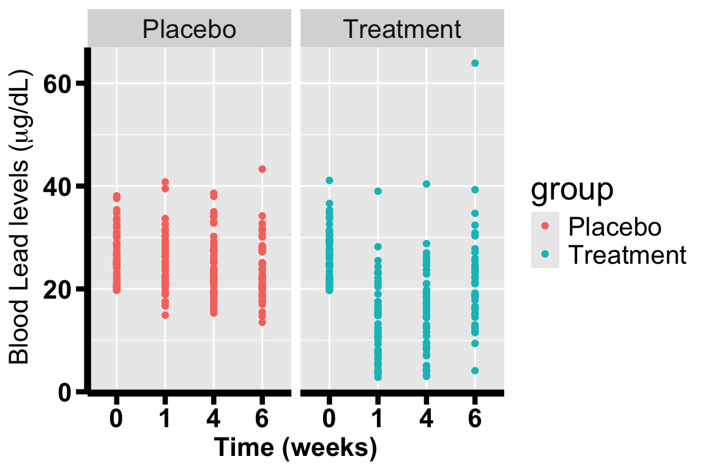
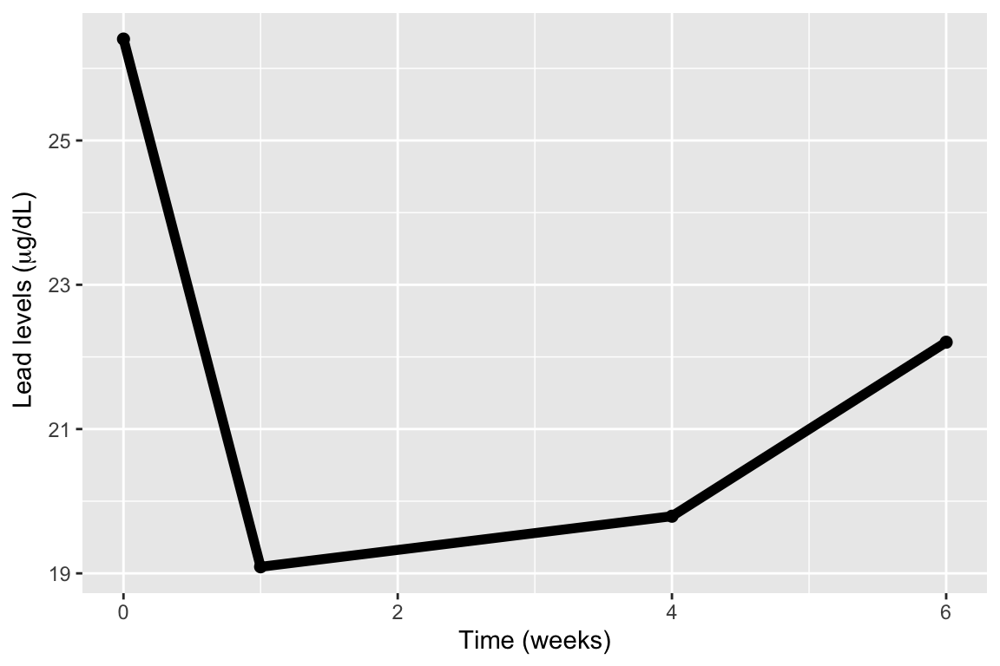
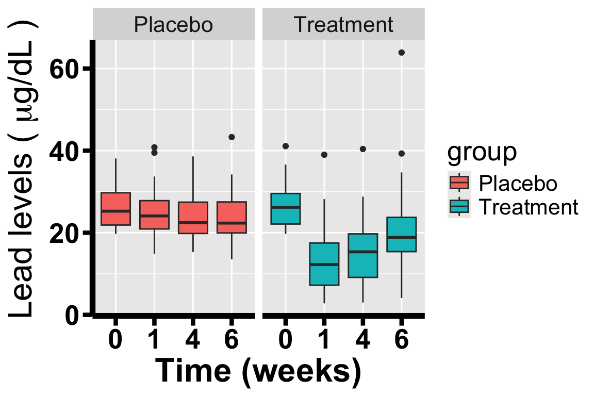
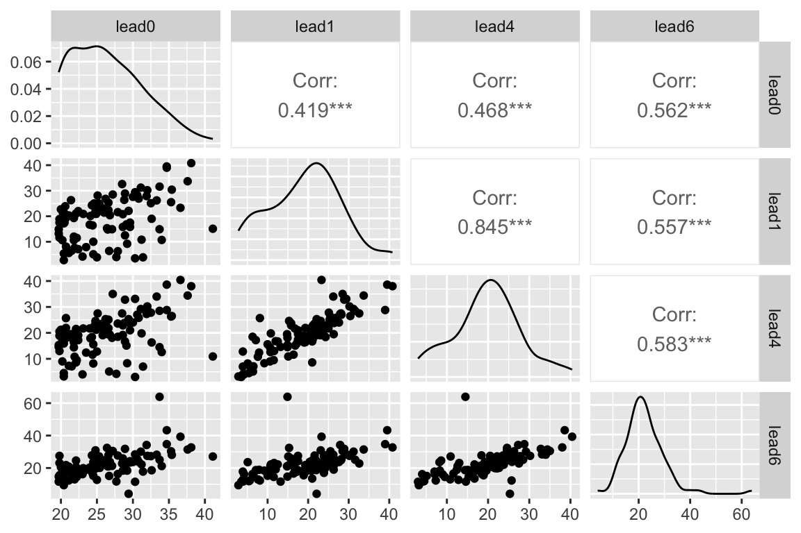

Learning Objectives 1. Understand how to conduct exploratory data analysis for longitudinal data 2. Understand how to create plots to visualize trends over time and interpret results 3. Understand how to calculate descriptive statistics (mean, standard deviation, variance-covariance matrix, correlation matrix) and interpret results 4. Understand how to identify characteristics of longitudinal data
1.1 Converting between data formats (wide and long format)
For the most part there are two formats that your data can come in. The wide format and the long format. The long format is when patients within the data have more than one observation. In other words, each row is snapshot into a subject’s history at a specific time point. In the case of our data, each subject has four observations corresponding to their four lead measurements (initial measurement, 1 week measurement, 4 week measurement, and 6 week measurement). The code below details how to convert from wide format to long format.
The arguments to gather():
data: Data object (e.g. the data object here is TLC).
key: Name of new key column (made from names of data columns).
value: Name of new value column.
...: Names of source columns that contain values.
factor_key: Treat the new key column as a factor (instead of character vector).
Then, we print the first 16 rows of the long format TLC data.
In this section we will create some visual representations of the data. While this is possible to do in base R, we will use ggplot. The plots look nicer and it is a reliable tool for making data visualizations. We will begin by plotting the blood lead level (BLL) trajectories for the first seven subjects.
1.2.1 Individual Trajectory Plot
We need to utilize ggplot package to graph the individual trajectory plot. Before that, we firstly make some modification on our data. We create a new numeric column named time corresponding to the level column which represents the number of weeks for the measurement as our x-axis timing variable. Next, we convert the id column into factor so we can have each individual as a group.
# create a new numeric timing variablelong_TLC$time <-c(0, 1, 4, 6)[long_TLC$level]# convert the id column into factor for groupinglong_TLC$id <-as.factor(long_TLC$id)
Next, we are reading to graph the individual trajectory plot, and we only focus on the first 7 id’s individual.
# create plotlead_trajectories <-ggplot(data = long_TLC[(long_TLC[,"id"] %in%1:7), ]) +#only focus on id's 1-7geom_line(aes(x = time, y = measurements, color = id, group = id),size =1.7) +theme(axis.line =element_line(colour ="black", size =2),text =element_text(size =20),axis.text =element_text(colour ="black", size =16, face ="bold"),axis.title =element_text(size =16, face="bold"),axis.ticks.length =unit(.25, "cm"),axis.ticks =element_line(colour ="black", size =1.5),legend.background =element_blank()) +scale_color_manual(name ="ID", values =c("green", "red", "purple", "blue","yellow", "pink", "orange"),labels =sapply(1:7, function(x) paste0("id", " = ", x))) +ylab(~paste("Blood Lead levels (", mu, "g/dL)")) +xlab("Time (weeks)")# print the individual trajectory plotprint(lead_trajectories)
1.2.2 Scatter Plot
Next, we create a scatter plot to evaluate BLL over time. We stratify the data by group.
long_TLC$factor_time <-as.factor(long_TLC$time)#create plotlead_point_plot <-ggplot(long_TLC, aes(x = factor_time, y = measurements, color = group)) +geom_point() +facet_wrap(.~group) +# this allows us to make separate boxes for the groupstheme(axis.line =element_line(colour ="black", size =2),text =element_text(size =20),axis.text =element_text(colour ="black", size =16, face="bold"),axis.title =element_text(size =16, face ="bold"),axis.ticks.length=unit(.25, "cm"),axis.ticks =element_line(colour ="black", size =1.5)) +ylab(~paste("Blood Lead levels (", mu, "g/dL)")) +xlab("Time (weeks)")# print the scatter plotprint(lead_point_plot)

1.2.3 Mean Plot
To plot averages over time, we first summarize the data. Here we summarize count, mean, standard deviation (SD) and variance of blood lead levels over time (or for each occasion).
#create table summarizing the blood lead levelslead_overall_summary <- long_TLC %>%group_by(time) %>%#CHECKsummarise(n = (length(measurements) -sum(is.na(measurements))),mean =round(mean(measurements, na.rm = T), 3),sd =round(sd(measurements, na.rm = T), 3),var =round(var(measurements, na.rm = T), 3))#output table for overall averageslead_overall_summary %>%mutate_all(linebreak) %>%kbl(caption ="Summary of average lead levels from TLC study",col.names=linebreak(c("Time","N", "Mean", "SD", "Variance")),booktabs=T, escape=F, align ="c") %>%kable_styling(full_width =FALSE, latex_options =c('hold_position'))
Summary of average lead levels from TLC study
Time
N
Mean
SD
Variance
0
100
26.406
4.999
24.989
1
100
19.091
8.673
75.225
4
100
19.792
8.086
65.385
6
100
22.204
7.756
60.159
Next, we create a plot of means.
lead_mean_plot <-ggplot(data = lead_overall_summary, aes(x = time, y = mean)) +geom_point(size =2) +geom_line(size =2) +ylab(~paste("Lead levels (", mu,"g/dL)")) +xlab("Time (weeks)")# print the mean plotprint(lead_mean_plot)

1.2.4 Box Plot
Another helpful method of visualizing the data is to use a boxplot. A boxplot is a standardized way of displaying the distribution of data based on five statistics: The minimum (bottom line), the 1st quartile (bottom of the box), the median (the line inside the box), the 3rd quartile (top of the box) and the maximum (top line). Sometimes you will encounter values that are above the maximum or below the minimum. These are known as outliers. This theoretically shouldn’t be true, but it occurs due to how the min and max are defined. The maximum is defined as the third quartile plus 1.5 times the InterQuartile Range (3rd quartile minus 1st quartile), and the minimum is defined as the 1st quartile minus 1.5 times the IQR.
lead_box_plot <-ggplot(long_TLC, aes(x = factor_time, y = measurements, fill = group)) +geom_boxplot() +facet_wrap(.~group) +#this is what allows us to make separate boxes for the groupstheme(axis.line =element_line(colour ="black", linewidth =2),text =element_text(size =20),axis.text =element_text(colour ="black", size =20, face ="bold"),axis.title =element_text(size =24, face ="bold"),axis.ticks.length=unit(.25, "cm"),axis.ticks =element_line(colour ="black", linewidth =1.5)) +ylab(~paste(" Lead levels ( ", mu, "g/dL )")) +xlab("Time (weeks)")# print the boxplotprint(lead_box_plot)

1.2.5 Correlation Plot
Next, we can create a correlation plot using GGally package.
ggpairs(TLC, columns =c(2:5))

1.3 Descriptive statistics for longitudinal data
In this section we will calculate some summary statistics for our continuous covariates. For simplicity I will be using the wide format of the data since every observation (i.e. row) will correspond to a unique id. There are many functions in R which will calculate any type of summary statistics you can think of. The most general is the summary() function in base R which calculates the minimum, 1st Quartile (25% Percentile), Median, Mean, 3rd Quartile (75%) and Maximum.
1.3.1 Calculate summary statistics by group
# Use by() function (in base R) to calculate summary statistics by Groupby(TLC[, c("lead0", "lead1", "lead4", "lead6")], TLC[, "group"], FUN = summary)
TLC[, "group"]: Placebo
lead0 lead1 lead4 lead6
Min. :19.70 Min. :14.90 Min. :15.30 Min. :13.50
1st Qu.:21.88 1st Qu.:20.93 1st Qu.:19.82 1st Qu.:19.95
Median :25.25 Median :24.10 Median :22.45 Median :22.35
Mean :26.27 Mean :24.66 Mean :24.07 Mean :23.65
3rd Qu.:29.73 3rd Qu.:27.82 3rd Qu.:27.45 3rd Qu.:27.50
Max. :38.10 Max. :40.80 Max. :38.60 Max. :43.30
------------------------------------------------------------
TLC[, "group"]: Treatment
lead0 lead1 lead4 lead6
Min. :19.70 Min. : 2.800 Min. : 3.000 Min. : 4.10
1st Qu.:22.12 1st Qu.: 7.225 1st Qu.: 9.125 1st Qu.:15.40
Median :26.20 Median :12.250 Median :15.350 Median :18.85
Mean :26.54 Mean :13.522 Mean :15.514 Mean :20.76
3rd Qu.:29.55 3rd Qu.:17.500 3rd Qu.:19.725 3rd Qu.:23.75
Max. :41.10 Max. :39.000 Max. :40.400 Max. :63.90
1.3.2 Calculate summary statistics for all BLL data (not as groups)
Min. 1st Qu. Median Mean 3rd Qu. Max.
2.80 17.50 21.90 21.87 26.73 63.90
If you’re in need of even more summary statistics you can use the stat.desc package from the pastecs library.stat.desc provides you with the additional following descriptive statistics: the number of values (nbr.val), the number of null values (nbr.null), the number of missing values (nbr.na), the minimal value (min), the maximal value (max), the range (range, that is, max-min) and the sum of all non-missing values (sum), the median (median), the mean (mean), the standard error on the mean (SE.mean), the confidence interval of the mean (CI.mean) at the p level, the variance (var), the standard deviation (std.dev) and the variation coefficient (coef.var) defined as the standard deviation divided by the mean.
### Calculate summary statistics by grouplibrary(pastecs)# Use by() function (in base R) to calculate summary statistics by Groupby(TLC[, c("lead0", "lead1", "lead4", "lead6")], TLC[, "group"], FUN = stat.desc)